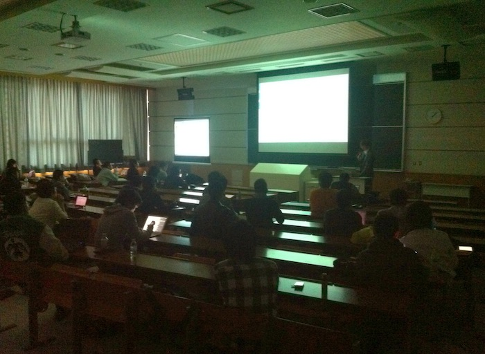
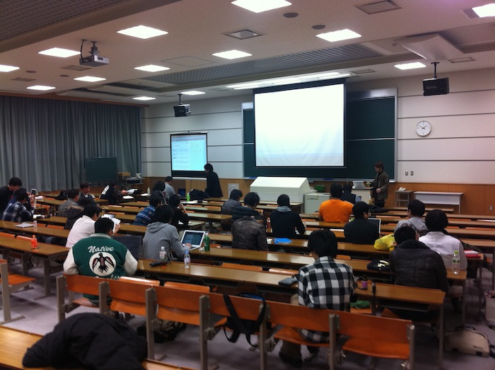
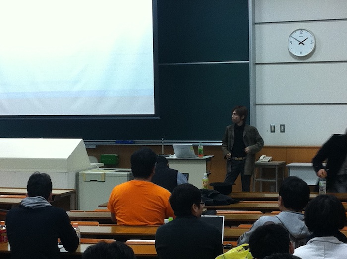
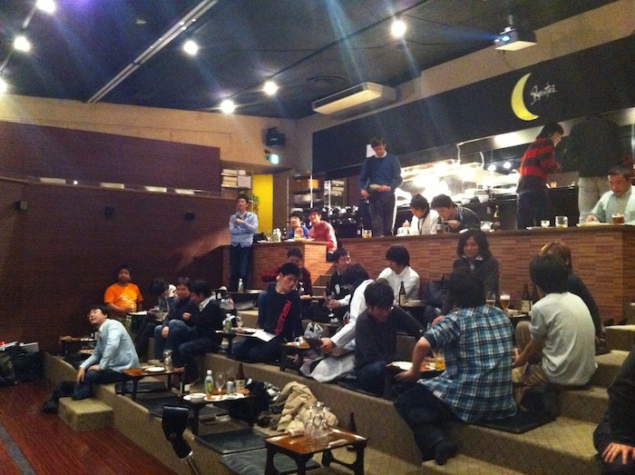
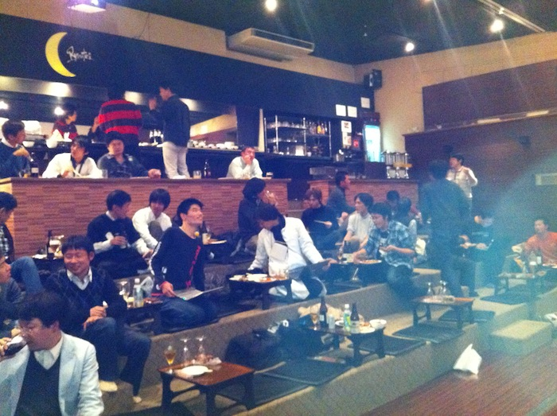

第15回 - オープンラボ岡山
- 終了しました。
?開催風景





?収支報告
<第15回オープンラボ岡山＆忘年会議2010> [収入] カンパ 17,500 忘年会費 115,000 ------------------------- 収入合計：132,500 [支出] 講師（ひらを除く昼の部の講師7名）忘年会費 129,500 ------------------------- 支出合計：129,500 --------------------------------------- 収入合計ー支出合計： 3,000 <合計> 前回繰り越し 5,261 --------------------------------------- 合計 8,261
?参加申し込み方法
?詳細
オープンラボ岡山 オープンラボ岡山とは、岡山周辺の技術者のための勉強会プラットフォームとして、 勉強会や読書会の場を提供するための組織です。勉強会や読書会を開催したい方、 参加したい方が簡単に集まることの出来る場にしたいと考えています。運営委員は 全員ボランティアで、それぞれが勉強会や読書会の主催者でもあります。興味のあ る方は是非とも一緒にやりましょう。 ■名称： 第15回 オープンラボ岡山 ■参加申し込み方法 http://atnd.org/events/9546 ■参加費： 500円 ■開催日時： 2010年12月18日（土曜日） 10:00〜17:00 ■開催場所： 岡山県立大学 大講義室（8206室） ■主催: オープンラボ岡山 実行委員会 ■共催： 岡山Javaユーザ会( http://java.okaya.ma/ ) 瀬戸内Linuxユーザ会（ http://www.stlug.org/ ) LinuxKernelHackJAPAN( http://hira-consulting.com/wiki ) オープンセミナー＠岡山実行委員会( http://openseminar.okaya.ma/ ) 日本PostgreSQLユーザ会 中国支部( http://www.postgresql.jp/ ) 岡山オープンソース技術研究会 ■懇親会（任意）： 忘年会議を予定しています。申込みはこちらまで。 http://openlab.okaya.ma/wiki.cgi?page=%CB%BA%C7%AF%B2%F1%B5%C42010 ---------------------------------------------------------------------- 【司会】花田さん <<< 10:00〜12:00 >>> 【タイトル】 オープンラボ岡山（旧リアルラボ）について 【発表者】ひら さん 【概要】 岡山駅から一駅、備前三門駅徒歩５分の場所に、勉強会などで 自由に使える小さな部屋を作りました。実現の為の試行錯誤な どをお話しします。 【タイトル】 外部サービスと連携した認証ゲートウェイ 【発表者】 赤木さん 【概要】 公衆 LAN などのゲートウェイにおいて，利用者の認証に mixi やTwitter などの外部認証を用いることで，アカウント管理の コストを削減する。 【タイトル】 オープンソースで作るwebサイト（元気が出るCMS!magic3!!） 【発表者】曽根壮大 さん 【概要】 CMSのオープンソースとして今、話題？のmagic3について利用 方法と簡単な構築方法についてもお話させていただきたいと考 えております。 【タイトル】 micolog（GAE/Python）を海外エンジニアと開発するノウハウ 【発表者】けんご さん http://code.google.com/p/micolog/ 【概要】 Google App Engine for Pythonで動作するmicologを、中国人 等海外のエンジニアと一緒に国際共同開発しているお話。 <<< 13:00〜17:00 >>> 【タイトル】 Google App EngineはTDD（テスト駆動開発）に向いているんだぜ 【発表者】ひがやすを さん 【概要】 Google App EngineはPaaSの部分に注目が集まりがちですが、 実はとてもTDDに向いています。 All DemoでGoogle App EngineにおけるTDDをお見せします。 【タイトル】 Hadoopウオッチャーの2010年重大ニュース 【発表者】 増田和弘 さん（ジャストシステム） 【概要】 忘年会議2009以降の、Hadoop/Mapreduce周辺の動向を、時系列をおって 振り返ります。ノリとしては、会社の偉い人向けに、この分野のExcect ive Summaryを作るというものです。 【タイトル】 G* in Action 【発表者】 奥 清隆 さん（日本Grails/Groovyユーザグループ関西支部） 【概要】 JVM上で動作する動的言語Groovyとその周辺技術についての話をします。 サンプルコードやデモを交えてGroovyの使い方、楽しさを紹介したいと 思います。 【タイトル】 Apache Cassandraについて 【発表者】 HANADA、Yoshihito さん（岡山Javaユーザ会） 【概要】 クラウドコンピューティングを支えるデータマネージメント技術の一つ にNoSQLと呼ばれる技術があります。NoSQLの実装技術には様々なものが ありますが、この中から、Facebookが開発し、現在はApacheが開発主体 となっているCassandraについてあーだこーだ紹介します。
Copyright(C)2009 オープンラボ岡山運営委員会 All rights reserved.